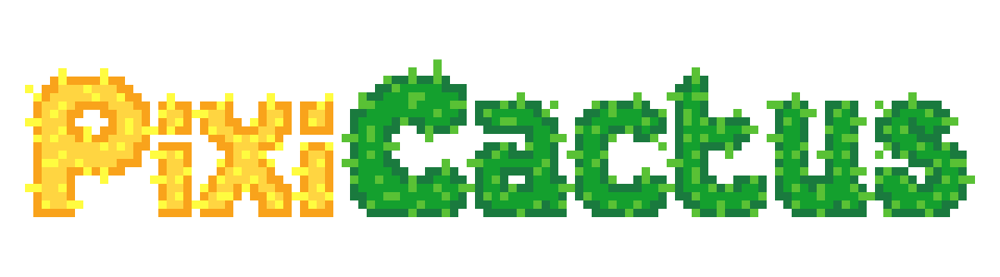

Welcome to the Best NFT Project
About PixiCactus
1. Green Cactus
.png)
This color is considered the "least strange" because normal cacti on Earth are usually green. But that's the only normal thing about these cacti. The one in the photo next to it appeared in the morning at the window of a lady's house, and no one knows how.
2. Blue Cactus
This cactus is blue and striking like a crystal. Because of its different color, these were the first to be called aliens. They should not be touched, like all the others, as it is still unknown if they are poisonous.
3. Golden Cactus

This cactus is golden and seems to be entirely made of gold, which is why many people are getting hurt trying to take them home. Its shine is so striking that people describe being in a trance for a while. (The colors of this cactus are different from the palette used in the rest of the project).
4. 1-Bit Cactus
This strange black-and-white cactus seems to have been taken from a game of the 1-bit era. Despite this, it has versions with thorns, flowers, and colorful accessories. No scientist so far has been able to explain the reason for its colors.